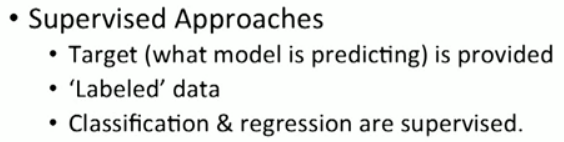
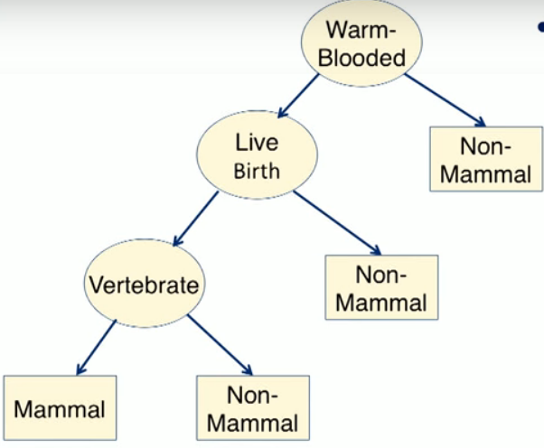
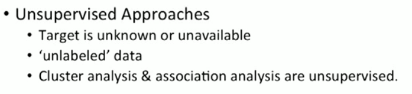
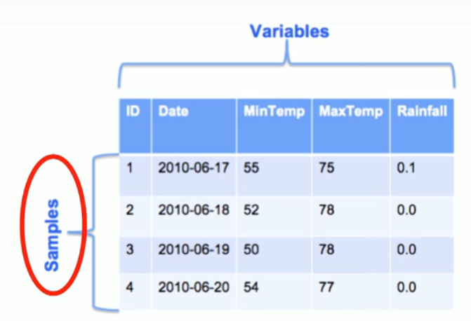
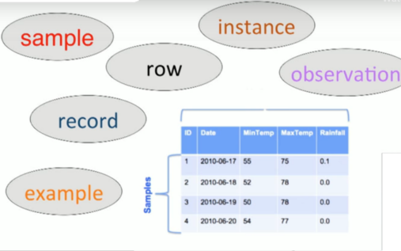

+ - USES

Machine Learning algorithms and techniques are used to build models to discover hidden patterns and trends in the data, allowing for data driven decisions to be made.
focuses on the study and construction of computer systems that can learn from data without being explicitly programmed.
+ - learning categories
- + -
Supervised learning
- What is it
we are given a data set and already know what our correct output should look like, having the idea that there is a relationship between the input and the output. 
- Algorithms
- Regression
Predicting some continuous value output, meaning that we are trying to map input variables to some continuous function
+ - e.g.
-
Given data about the size of houses on the real estate market, try to predict their price. Price as a function of size is a continuous output.
We could turn this example into a classification problem by instead making our output about whether the house "sells for more or less than the asking price." Here we are classifying the houses based on price into two discrete categories.
Given a picture of a person, we have to predict their age on the basis of the given picture
how much amount will it rain ?
What will be the stock price of a particular stock

+ - Types
- Simple regression
- Linear
-
- Linear
- Multiple regression
- Linear
-
- Linear
+ - Regression Algos
-
- Classification
predicting a discreet valued output, we are trying to map input variables into discrete categories.
+ - e.g.
- will it rain tomorrow
- Stock prices will fall or rise ?
- Given a patient with a tumor, we have to predict whether the tumor is malignant or benign.
There are many algorithms to build a classification model, including kNN or k-nearest neighbors, Decision Trees and Naïve Bayes.
Algos
- + -
KNN- K-nearest Neighbors.
This technique relies on the notion that samples with similar characteristics, that is samples with similar values for input, likely belong to the same class.
- + -
Decision Trees
model that uses a tree-like structure to represent multiple decision paths. Traversing each path leads to a different way to classify an input sample.
+ - decision trees
- 
- Naive Bayes
- + -
Logistic Regression
- Hypothesis
- + -
Model
-
- Sigmoid function
-
A sigmoid function is a type of activation function, and more specifically defined as a squashing function. Squashing functions limit the output to a range between 0 and 1, making these functions useful in the prediction of probabilities.
-
- + -
Interpretation
-
- + -
Decision boundary
Its a property of Hypothesis not the training set
The decision boundary is the line that separates the area where y = 0 and where y = 1. It is created by our hypothesis function.

- + -
Non linear Boundary Decision
- + -
Model
- + -
Cost Function
- + -
Given
- so
- + -
Given
- + -
Gradient Descent
- Hypothesis
- Regression
- k-Nearest Neighbors
- Linear Regression
- Logistic Regression
- Support Vector Machines (SVMs)
- Decision Trees and Random Forests
- Neural networks2
- What is it
- + -
Un-supervised learning
+ - What is it ?
- allows us to approach problems with little or no idea what our results should look like.
- 
- Dimension reduction
- Density estimation
- Market based analysis
- + -
e.g.
-
Clustering: Take a collection of 1,000,000 different genes, and find a way to automatically group these genes into groups that are somehow similar or related by different variables, such as lifespan, location, roles, and so on.
Non-clustering: The "Cocktail Party Algorithm", allows you to find structure in a chaotic environment. (i.e. identifying individual voices and music from a mesh of sounds at a cocktail party).
-
Cluster analysis/Clustering
- + -
e.g.
- the goal is to organize similar items in your dataset into groups.
- social network analysis
- organize computing clusters
- astronomical data analysis
- market segmentation
- segment your customers into seniors, adults and teenagers.
- K-Means
- DBSCAN
- Hierarchical Cluster Analysis (HCA)
Anomaly detection and novelty detection
- e.g.
-
detecting unusual credit card transactions to prevent fraud,
catching manufacturing defects,or
automatically removing outliers from a dataset before feeding it to another learning algorithm.
-
- One-class SVM
- Isolation Forest
Association analysis
- What is it ?
- The goal here is to come up with a set of rules to capture associations between items or events.
- + -
e.g.
association analysis can reveal that banking customers who have checking or deposit accounts also tend to be interested in other investment vehicles such as money market accounts.
above analysis can be used for cross selling
- Apriori
- Eclat
Visualization and dimensionality reduction
- Principal Component Analysis (PCA)
- Kernel PCA
- Locally Linear Embedding (LLE)
- t-Distributed Stochastic Neighbor Embedding (t-SNE)
- + -
semisupervised learning
- what is it ?
Since labeling data is usually time-consuming and costly, you will often have plenty of unlabeled instances, and few labeled instances. Some algorithms can deal with data that’s partially labeled.
- what is it ?
- + -
Reinforcement Learning.
-
The learning system, called an agent in this context, can observe the environment, select and perform actions, and get rewards in return (or penalties in the form of negative rewards, as shown in Figure 1-12). It must then learn by itself what is the best strategy, called a policy, to get the most reward over time. A policy defines what action the agent should choose when it is in a given situation.
e.g.
- many robots implement Reinforcement Learning algorithms to learn how to walk
- DeepMind’s AlphaGo program is also a good example of Reinforcement Learning:
-


Another crtieria for learning Categories
- BATCH LEARNING or offline learning.
the system is incapable of learning incrementally:
it must be trained using all the available data.
This will generally take a lot of time and computing resources, so it is typically done offline
If you have a lot of data and you automate your system to train from scratch every day, it will end up costing you a lot of money.
- ONLINE LEARNING
train the system incrementally by feeding it data instances sequentially, either individually or in small groups called mini-batches.
+ - Regression Algos
- + -
Linear Regression with Single variable
- + -
Notations
-
- + -
Cost Function
We can measure the accuracy of our hypothesis function by using a cost function.
This takes an average difference (actually a fancier version of an average) of all the results of the hypothesis with inputs from x's and the actual output y's.

This function is otherwise called the "Squared error function", or "Mean squared error".
+ - Overall Idea
-
- + -
gradient descent for single Variable
So we have our hypothesis function and we have a way of measuring how well it fits into the data. Now we need to estimate the parameters in the hypothesis function. That's where gradient descent comes in.
+ - pic
+ - pic
-
- + -
Notations
- + -
Linear Regression with Multiple variables
- Notations
-
- hypothesis function
-
- + -
Gradient Descent for Multiple Variables
-
- Notations
- + -
Speeding Up Gradient Descent
-
used to speed up gradient descent by having each of our input values in roughly the same range.
This is because θ will descend quickly on small ranges and slowly on large ranges, and so will oscillate inefficiently down to the optimum when the variables are very uneven.

Feature Scaling
involves dividing the input values by the range (i.e. the maximum value minus the minimum value) of the input variable, resulting in a new range of just 1.
Mean normalization
involves subtracting the average value for an input variable from the values for that input variable resulting in a new average value for the input variable of just zero.
To implement both of these techniques, adjust your input values as shown in this formula:
-
- + -
Gradient descent test
- + -
Debugging gradient descent
Make a plot with number of iterations on the x-axis. Now plot the cost function, J(θ) over the number of iterations of gradient descent. If J(θ) ever increases, then you probably need to decrease α.

It has been proven that if learning rate α is sufficiently small, then J(θ) will decrease on every iteration.

try alpha value as .001, 0.01 , 0.1 or 1
- + -
Automatic convergence test.
Declare convergence if J(θ) decreases by less than E in one iteration, where E is some small value such as 10−3.
However in practice it's difficult to choose this threshold value.
- + -
Debugging gradient descent
- + -
Normal Equations
second way of minimizing J.
find the optimum theta without iteration

e.g
+ - Comparision
With the normal equation, computing the inversion has complexity O(n3). So if we have a very large number of features, the normal equation will be slow. In practice, when n exceeds 10,000 it might be a good time to go from a normal solution to an iterative process.

-
- + -
Normal Equation Noninvertibility
-


+ - Types
- Anamoly Detection
- Discovering unusual and abnormal cases
- Sequence Mining
- Predicting next events , click streams
- Dimension Reduction
- Reducing the size of the data.
- Recommendation systems
+ - Popular Python libraries

+ - Sci-kit learn
an open source library in Python for end to end Machine Learning.
It builds upon the strength of NumPy, SciPy, and matplotlib like many other Python libraries.

+ - Terminology
- + -
Samples
- is an instance or example of an entity in your data.
- typically a row in your dataset.
- + -
e.g.
- 
- other names
- 
- Variables
- typically columns in our dataset
- sometimes referred to as features
- other names
- field, attribute, column, feature, dimensions
+ - Matrix Calculations
- + -
Matrix-Matrix Multiplication
To multiply two matrices, the number of columns of the first matrix must equal the number of rows of the second matrix.


- + -
Matrix multiplication properties
- + -
Not commutative
-
- + -
It is associative
- A*B*C = (A*B)*C = A * (B*C)
- + -
Identity Matrix
-
- + -
Not commutative
- + -
Matrix Inverse
The inverse of a matrix A is denoted A^{-1}A −1 . Multiplying by the inverse results in the identity matrix.
Only square matrix has an inverse
- Matrix Transpose


+ - Octave Commands
- % Comments
- ; to suppress the output
- load(<fileName>) % will load the file in octave
- who % what all variables are in octave
- whos % details of the varaibles
- clear <variebale Name> % clears the specified variable
- save <filename> <variable> % will save the variable to the specified file
- save <filename.txt> <variable> -ascii % save file in a human readable format
- matrix
- if A is a matrix then A(3,2) will give 3 row, 2nd column element
- if A is a matrix then A(3,:) will give full 3rd row
- if A is a matrix then A(:,2) will give full 2nd column
- if A is a matrix then A([1,3], :) will give full 1st & 3rd row
- A = [A , [100 ; 101 ;102]] %append column vector to the existing A matrix
- A(:) % puts all element of A into a single column vector
- C = [A B] %MATRIX CONCAT
- C = [A ; B] % ROW WISE CONCAT
- size(X) % size of the matrix
- length(X) % length of the longest dimension of the matrix)
- + -
Computation Operations
-
C .^2 % C is a matrix , we are doing element wise squaring of matrix c
1 ./ C % element wise inverse
log(C)
exp(c)
abs(c)
-c
C' % transpose of C
max(C) % column wise maximum
max(max(c)) % maximum of a matrix
[val, ind] = max(C) % gives max of matrix C and its index
c < 3 % return boolean value element wise
[r,c] = find( a < 3) % returns all elements less than 3)
magic(3)
floor(c)
ceil(c)
sum(c) or sum(c,1) % column wise sum
sum(c,2) % row wise sum
prod(c)
rand(3)
flipupd(c) % flips matrix
pinv(c) % inverse of matrix C
-
- + -
Generating data
- t = [0 : 0.01 : 0.98] ; % generates data from 0 to 0.98 with a step of 0.01
- + -
Plotting Data
-
t=[0 : 0.01 : 0.98];
y1 = sin(2*pi*4*t);
plot(t,y1);
hold on % holds the plotted picter
y2 = cos(2*pi*4*t);
plot(t, y2, 'r'); % overlay plot the graph in red color
xlabel('time');
ylabel('value');
legend('sin', 'cos');
title('my plot');
print -dpng 'myPlot.png' % save the plot in file myPlot.png'
close % closes the plot figure
-----------------------For Seperate figures-----------------------
figure(1) ; plot(t,y1);
figure(2) ; plot(t,y12;
-----------------------For Sub plotting-----------------------------
subplot(1,2,1) %Divides plot in 1 by 2 grid and access 1st element.
plot(t,y1);
subplot(1,2,2);
plot(t,y2);
---------------------------------------------------------------------------
axis() % changes axis scale.
clf % to clear figure
-----------------------------------------
imagesc(A) % creates a colored map
imagesc(A), colorbar, colormap gray % chaining commands
help plot % provides help for the plot
plot can save files in multiple formats
-
- Control Statements
- + -
For loop
-
- break
- continue
- + -
while loop
-
- + -
if else
-
- functions
create a file with name of squareThisNumber.m

make call like squareThisNumber(3)
can return multiple values
function [y1,y2] = squareAndCubeThisNumber(x)
y1 = x^2;
y2 = x^3
- + -
For loop
- Vectorization
- Vectorized implementation is lot efficient than normal for loop
- e.g.1
-
- e.g. 2
-